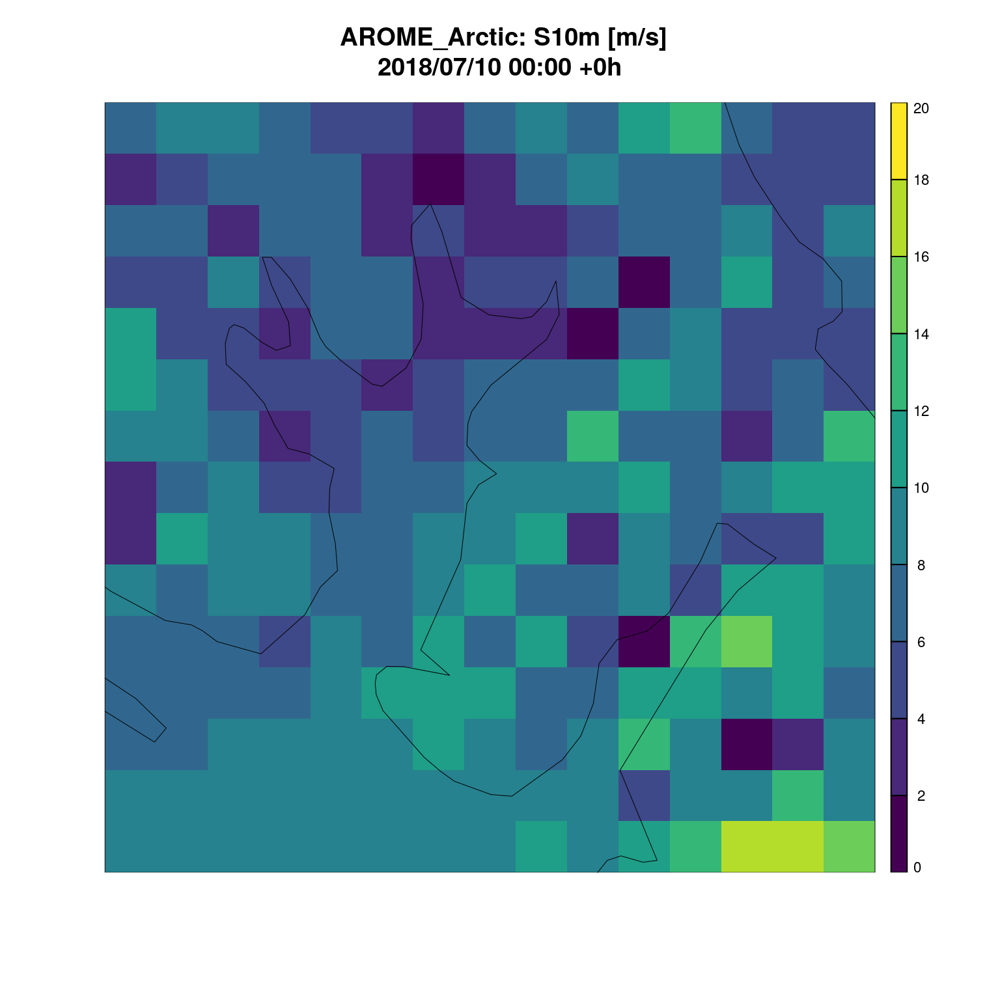

As discussed in the Reading forecast
model data guide, forecast model data can be read with the
read_forecast() function. However, in many cases you may
want to interpolate those data to point locations, such as weather
stations; or transform the data to a different grid, maybe with a
different projection; or to obtain a vertical cross section of the data.
In harp, we call these operations transformations and they are done via
the transformation argument to
read_forecast(). Three transformations are possible:
“interpolate”, “regrid”, and “xsection”. Different options for these
transformations are set via the transformation_opts
argument.
Example data
For all of these examples we will use data provided in the harpData package, which, if you haven’t done so already, you can install with:
remotes::install_github("harphub/harpData")Interpolate
To interpolate forecast data to points, set
transformation = "interpolate" in the call to
read_forecast(). harp has a built in list of weather
stations, station_list, that was taken from the list of all
WMO SYNOP stations in 2018. The default is to interpolate to all of
these stations that exist within the forecast model domain. In the below
example, AROME_Arctic data are interpolated to stations within that
domain.
First attach the harpIO package (you could equally attach harp, which automatically attaches all harp packages)
#> Loading required package: harpCore#>
#> Attaching package: 'harpCore'#> The following object is masked from 'package:stats':
#>
#> filterThen we are going to read in the AROME_Arctic data for 10m wind speed
(S10m) adding transformation = "interpolate"
read_forecast(
2018071000,
"AROME_Arctic",
"S10m",
transformation = "interpolate",
file_path = system.file("grib/AROME_Arctic", package = "harpData"),
file_template = "harmonie_grib_fp",
return_data = TRUE
)#> Warning: 'transformation_opts' not set for transformation = 'interpolate'.
#> Using default interpolate_opts()#> ::deterministic point forecast:: # A tibble: 119 × 14
#> fcst_model fcst_dttm lead_time parameter valid_dttm
#> <chr> <dttm> <dbl> <chr> <dttm>
#> 1 AROME_Arctic 2018-07-10 00:00:00 0 S10m 2018-07-10 00:00:00
#> 2 AROME_Arctic 2018-07-10 00:00:00 0 S10m 2018-07-10 00:00:00
#> 3 AROME_Arctic 2018-07-10 00:00:00 0 S10m 2018-07-10 00:00:00
#> 4 AROME_Arctic 2018-07-10 00:00:00 0 S10m 2018-07-10 00:00:00
#> 5 AROME_Arctic 2018-07-10 00:00:00 0 S10m 2018-07-10 00:00:00
#> 6 AROME_Arctic 2018-07-10 00:00:00 0 S10m 2018-07-10 00:00:00
#> 7 AROME_Arctic 2018-07-10 00:00:00 0 S10m 2018-07-10 00:00:00
#> 8 AROME_Arctic 2018-07-10 00:00:00 3 S10m 2018-07-10 03:00:00
#> 9 AROME_Arctic 2018-07-10 00:00:00 3 S10m 2018-07-10 03:00:00
#> 10 AROME_Arctic 2018-07-10 00:00:00 3 S10m 2018-07-10 03:00:00
#> # ℹ 109 more rows
#> # ℹ 9 more variables: step_range <chr>, level_type <chr>, level <int>,
#> # units <chr>, SID <int>, lat <dbl>, lon <dbl>, fcst_cycle <chr>, fcst <dbl>You will see a warning and a couple of messages. The warning states
that read_forecast() did not receive any options for the
interpolation so it is using the default options with the default
station list. Furthermore, you will see that interpolate weights are
being derived from ‘sfc_geo’ - this is the default behaviour so that if
corrections are to be made for 2m temperature for elevation differences
between the model and reality.
Interpolate options
Options for interpolation are set using the
interpolate_opts() function and passed to
read_forecast() via the transformation_opts
argument. You can see options are available and their defaults by
running interpolate_opts
#> No stations specified. Using default stations: 'station_list'#> $stations
#> # A tibble: 13,417 × 5
#> SID lat lon elev name
#> <int> <dbl> <dbl> <dbl> <chr>
#> 1 1001 70.9 -8.67 9.4 JAN MAYEN
#> 2 1002 80.1 16.2 8 VERLEGENHUKEN
#> 3 1003 77 15.5 11.1 HORNSUND
#> 4 1004 78.9 11.9 8 NY-ALESUND II
#> 5 1006 78.3 22.8 14 EDGEOYA
#> 6 1007 78.9 11.9 7.7 NY-ALESUND
#> 7 1008 78.2 15.5 26.8 SVALBARD AP
#> 8 1009 80.7 25.0 5 KARL XII OYA
#> 9 1010 69.3 16.1 13.1 ANDOYA
#> 10 1011 80.1 31.5 10 KVITOYA
#> # ℹ 13,407 more rows
#>
#> $method
#> [1] "nearest"
#>
#> $correct_t2m
#> [1] TRUE
#>
#> $keep_model_t2m
#> [1] FALSE
#>
#> $lapse_rate
#> [1] 0.0065
#>
#> $clim_file
#> NULL
#>
#> $clim_file_format
#> NULL
#>
#> $clim_file_opts
#> NULL
#>
#> $clim_param
#> [1] "sfc_geo"
#>
#> $use_mask
#> [1] FALSE
#>
#> $weights
#> NULL
#>
#> $keep_raw_data
#> [1] FALSEWe can use interpolate_opts() to set the points to which
we want to interpolate, by setting stations as a data frame (if you do
not use the default station_list, this would normally be
read in from an external source rather than set manually). It is
important that the data frame includes columns “SID”, “lat”, “lon” and,
optionally, “elev”, where “SID” a unique station ID and “elev” is the
elevation of the station in meters.
my_stations <- data.frame(
SID = c(1003, 1004, 1006),
lat = c(77.0000, 78.9167, 78.2506),
lon = c(15.5000, 11.9331, 22.8225)
)
my_options <- interpolate_opts(stations = my_stations)#> Warning: No 'elev' column found in stations, and correct_t2m = TRUE. Setting
#> correct_t2m = FALSEYou will see a warning that no “elev” column was found and
correct_t2m is being set to FALSE. When interpolating 2m
temperature an attempt is made to make a correction due to the
difference in height between the model and reality using a simple lapse
rate that can be changed from the default of 0.0065 K/m with the
lapse_rate argument. If the station elevation is not
available, this cannot be done. Furthermore, if the 2m correction is
done, the uncorrected model temperature is discarded, but can be kept by
setting keep_model_2m = TRUE. Finally, if the first
forecast file does not contain surface geopotential, or model orography
a “clim file” can be passed that does contain this information on the
same grid as the forecast files. Additionally the parameter to read from
the clim file can be set - this would normally by “sfc_geo” or
“oro”.
To demonstrate all of this, let’s add an “elev” column (with fake data) to our small station list and read the 2m temperature while keeping the uncorrected model 2m temperature and manually setting a clim file.
my_stations$elev <- c(145, 233, 308)
my_options <- interpolate_opts(
stations = my_stations,
keep_model_t2m = TRUE,
clim_file = system.file(
"grib/AROME_Arctic/2018/07/10/00/fc2018071000+048grib_fp",
package = "harpData"
)
)
t2m <- read_forecast(
2018071000,
"AROME_Arctic",
"T2m",
transformation = "interpolate",
transformation_opts = my_options,
file_path = system.file("grib/AROME_Arctic", package = "harpData"),
file_template = "harmonie_grib_fp",
return_data = TRUE
)To show the effect of the correction to 2m temperature, we can just
show the relevant columns using the select method from the
dplyr package, and bringing T2m and T2m_uncorrected into their own
columns using the pivot_wider() function from the tidyr
package.
library(dplyr)
library(tidyr)
select(t2m, SID, lead_time, parameter, fcst) %>%
pivot_wider(names_from = parameter, values_from = fcst)#> # A tibble: 51 × 4
#> SID lead_time T2m_uncorrected T2m
#> <dbl> <dbl> <dbl> <dbl>
#> 1 1003 0 277. 276.
#> 2 1004 0 277. 276.
#> 3 1006 0 278. 276.
#> 4 1003 3 277. 277.
#> 5 1004 3 276. 276.
#> 6 1006 3 278. 276.
#> 7 1003 6 277. 277.
#> 8 1004 6 276. 276.
#> 9 1006 6 278. 276.
#> 10 1003 9 277. 277.
#> # ℹ 41 more rowsAs you will see the uncorrected temperatures are higher as we set artificially high elevations for the elevation in my_stations.
Regrid
Regridding is done in much the same way as interpolating to points,
except you set transformation = "regrid" and the options
are generated using regrid_opts(). Unlike for interpolation
transformation_opts must be set other
read_forecast() won’t know what grid to which to regrid the
data. The most important argument to regrid_opts() is
new_domain. This defines the domain that to which the data
will be regridded. It must be a “geofield” or “geodomain” object - all
gridded data read in by read_forecast() or
read_grid() are automatically coerced into geofields, or a
geodomain can be defined using harpCore’s
define_domain() function.
We will demonstrate regridding by making a domain with 10km resolution based on the AROME_Arctic domain.
library(meteogrid)
my_domain <- define_domain(
centre_lon = 15.57905,
centre_lat = 78.21638,
nxny = 15,
dxdy = 10000,
reflat = 77.5,
reflon = -25
)
my_options <- regrid_opts(new_domain = my_domain, keep_raw_data = TRUE)In the above, keep_raw_data = TRUE, which means that
both the original fields and the regridded fields are kept so that we
can compare them. If keep_raw_data is not set, then the
original data before regridding will be discarded.
s10m <- read_forecast(
2018071000,
"AROME_Arctic",
"S10m",
transformation = "regrid",
transformation_opts = my_options,
file_path = system.file("grib/AROME_Arctic", package = "harpData"),
file_template = "harmonie_grib_fp",
return_data = TRUE
)We can now plot the two fields using plot_field() from
the harpVis package.
#> Loading required package: ggplot2#> Loading required package: shiny
plot_field(
s10m,
fcst_model = "AROME_Arctic",
plot_col = gridded_data,
lead_time = 0,
breaks = seq(0, 20, 2)
)
#
plot_field(
s10m,
fcst_model = "AROME_Arctic",
plot_col = regridded_data,
lead_time = 0,
breaks = seq(0, 20, 2)
)